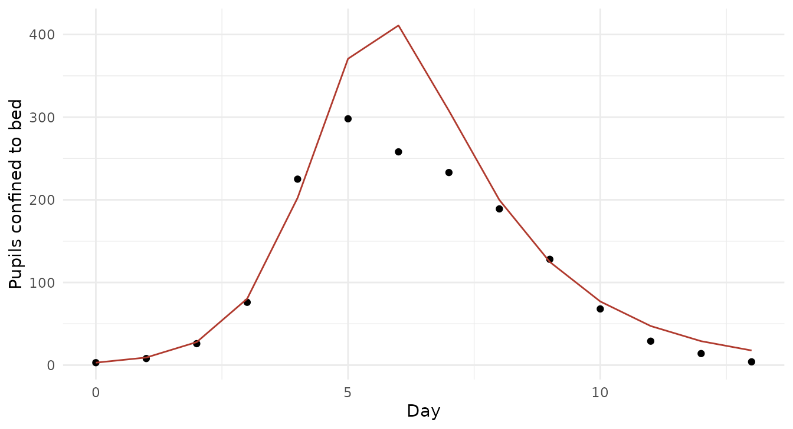

tidyepidemio follows one rule: a data frame goes in, a tibble comes out. Columns are named without quotes, as in dplyr, and every result can be filtered, joined, plotted or tabulated like any other data.
1. A measure of association
Does smoking in pregnancy raise the risk of low birth weight? The
birthwt data (Hosmer and Lemeshow) record 189 births at
Baystate Medical Center, Springfield, Massachusetts, in 1986.
bw <- MASS::birthwt
epi_risk_ratio(bw, smoke, low)
#> # A tibble: 1 × 9
#> measure estimate conf_low conf_high exposed_events exposed_total
#> <chr> <dbl> <dbl> <dbl> <dbl> <dbl>
#> 1 risk_ratio 1.61 1.06 2.44 30 74
#> # ℹ 3 more variables: unexposed_events <dbl>, unexposed_total <dbl>,
#> # correction <dbl>
epi_odds_ratio(bw, smoke, low)
#> # A tibble: 1 × 9
#> measure estimate conf_low conf_high exposed_events exposed_total
#> <chr> <dbl> <dbl> <dbl> <dbl> <dbl>
#> 1 odds_ratio 2.02 1.08 3.78 30 74
#> # ℹ 3 more variables: unexposed_events <dbl>, unexposed_total <dbl>,
#> # correction <dbl>Race confounds this association, so pool across race strata with Mantel-Haenszel and check whether the odds ratios differ between strata:
epi_mantel_haenszel(bw, smoke, low, race)
#> # A tibble: 1 × 7
#> estimate conf_low conf_high strata heterogeneity_statistic heterogeneity_df
#> <dbl> <dbl> <dbl> <int> <dbl> <int>
#> 1 3.09 1.49 6.39 3 3.13 2
#> # ℹ 1 more variable: heterogeneity_p_value <dbl>The Breslow-Day test gives no evidence that the effect differs by race.
2. Adjusting for several covariates
bw$race <- factor(bw$race, labels = c("white", "black", "other"))
epi_adjusted_odds_ratio(bw, smoke, low, adjust = c(age, lwt, race))
#> # A tibble: 1 × 7
#> measure estimate conf_low conf_high n se_type adjusted_for
#> <chr> <dbl> <dbl> <dbl> <int> <chr> <chr>
#> 1 adjusted_odds_ratio 2.87 1.36 6.04 189 model age, lwt, raceThe same call accepts weights,
robust = "HC1", cluster, an effect
modifier and spline terms through
nonlinear.
3. An outbreak
The 1978 boarding-school influenza outbreak is the textbook SIR example:
flu <- transform(flu_boarding_school_1978, day = 0:13)
fit <- epi_fit_compartmental(flu, day, in_bed, population = 763, gamma = 0.5)
generics::tidy(fit)
#> # A tibble: 2 × 3
#> term estimate fixed
#> <chr> <dbl> <lgl>
#> 1 beta 2.49 FALSE
#> 2 gamma 0.5 TRUE
ggplot(generics::augment(fit), aes(day)) +
geom_point(aes(y = in_bed)) +
geom_line(aes(y = .fitted), colour = "#B03A2E") +
labs(x = "Day", y = "Pupils confined to bed") +
theme_minimal()
Statistical advice
tep_advise() says which estimator answers the question
and what to check first; tep_interpret() explains a result,
says what to do next and how to report it in a paper. With the tidyvisor
package installed, tidyvisor() calls them for you.
d <- data.frame(exposure = rep(0:1, each = 40),
outcome = rep(c(0, 1, 0, 1), c(30, 10, 18, 22)))
tep_advise(d, exposure = "exposure", outcome = "outcome")
#>
#> ── tidyvisor: is the exposure associated with the outcome? ─────────────────────
#> Question: association
#>
#> ── What the data show ──
#>
#> • Records: 80
#> • Outcome events: 32 of 80 (40.0%) — common outcome (over 10%): odds ratios
#> exaggerate risk ratios; report the risk ratio
#> • Exposure groups: 0: 40, 1: 40
#>
#> ── Recommended ──
#>
#> Estimate: Risk ratio (cohort) or odds ratio (case-control)
#> The design decides the measure: risks in cohorts and trials, odds in
#> case-control studies; rates when follow-up time differs.
#> epi_risk_ratio(data, exposure, outcome) # or epi_odds_ratio(), epi_rate_ratio()
#> Confounding: Stratify or adjust
#> A crude ratio mixes the exposure with whatever travels with it; compare it with
#> the Mantel-Haenszel or adjusted ratio.
#> epi_mantel_haenszel(data, exposure, outcome, <stratum>)
#> Small numbers: Exact test when cells are small
#> With expected counts below 5, use an exact test and interval.
#> epi_fisher_test(data, exposure, outcome)
tep_interpret(epi_risk_ratio(d, exposure, outcome))
#>
#> ── tidyvisor: what the results show ────────────────────────────────────────────
#>
#> ── Result ──
#>
#> • The risk ratio is 2.2 (95% CI 1.2 to 4.03). The risk of the outcome is 120%
#> higher in the exposed than in the unexposed.
#> • A crude estimate: confounding is not removed.
#>
#> ── After the overall test ──
#>
#> • Check that the association is not explained by confounding: stratify
#> (epi_mantel_haenszel()) or adjust (epi_adjusted_risk_ratio(),
#> epi_adjusted_odds_ratio()) for the confounders named in advance, and report
#> crude and adjusted estimates side by side.
#> • With several exposure levels, report each against the same reference group,
#> and test for a trend if the levels are ordered, rather than testing every
#> pair.
#>
#> ── For the paper ──
#>
#> • Results: 'The risk ratio for exposure was 2.2 (95% CI 1.2 to 4.03).'
#> • Report the estimate with its 95% CI (and the counts behind it), not the
#> p-value alone; give crude and adjusted estimates side by side.
#> • Figure: a forest plot of the estimates with their intervals on a log scale,
#> with a line at 1:
#> • ggplot2::autoplot(result)
#> • ggplot2::ggsave("figure1.pdf", width = 85, height = 70, units = "mm") # one
#> journal column
#> • Figure style for journals: one column (about 85 mm) or the page (about 180
#> mm); axes labelled with units; a color-blind-safe palette; intervals shown,
#> with what they are stated in the caption; text at least 8 pt; vector PDF.
#> • Table: exposed and unexposed with events and totals (or person-time), the
#> crude and adjusted estimates with intervals, and what was adjusted for.
#> • Methods: the design (cohort, case-control, cross-sectional), the measure and
#> why, the interval method, the confounders and how they were chosen; follow
#> STROBE for observational studies, and the software (R 4.6.2, tidyepidemio
#> 1.2.0.9000; citation("tidyepidemio")).Where next
The articles on the package website work through complete analyses on real data:
- COVID-19 outbreak analysis: epidemic curves, growth, Rt and forecasting for New Zealand’s first wave.
- Cluster detection and surveillance: SIDS clusters in North Carolina, COVID-19 across New York State and seasonal mortality screening.
- Cohort and clinical epidemiology: the British Doctors Study, competing risks in MGUS and a diabetes risk model.